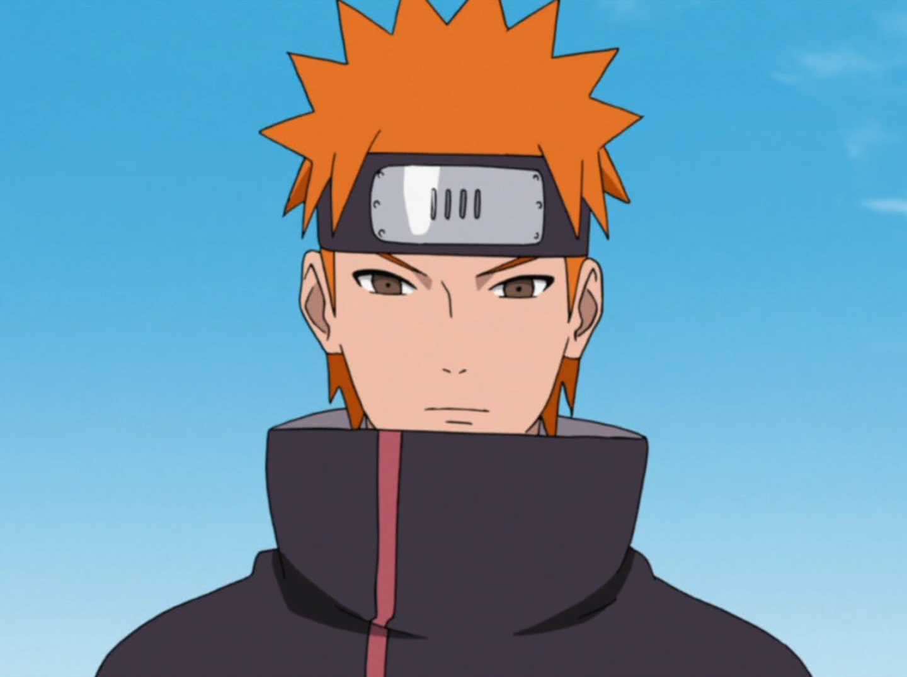
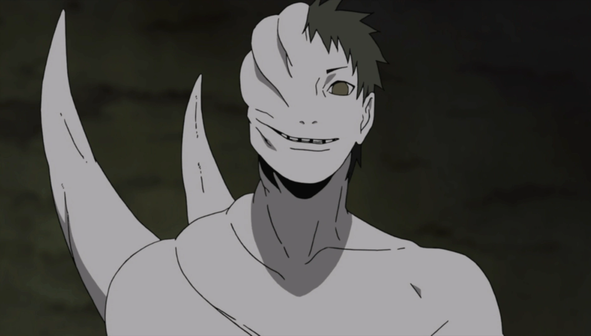
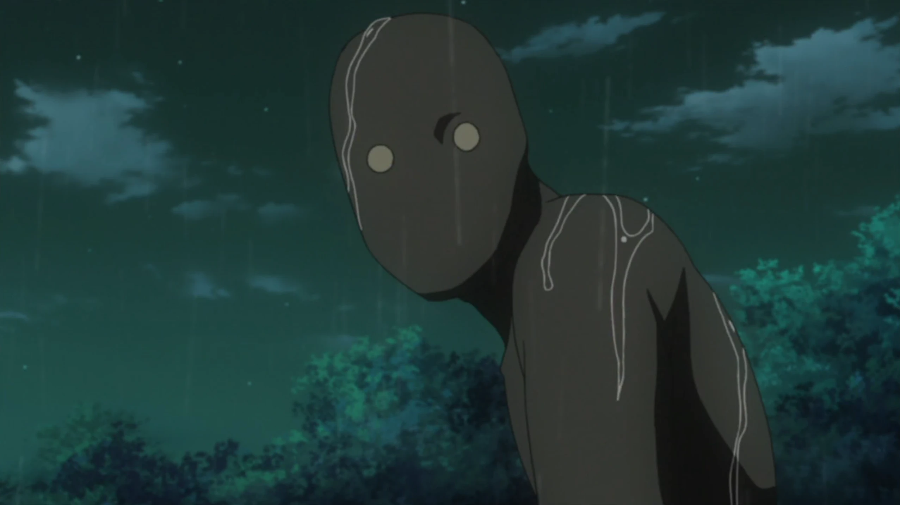

Nagato
Nagato (長門) foi um shinobi de Amegakure descendente do clã Uzumaki. Quando Nagato ainda era criança, Madara Uchiha o encontrou e transplantou secretamente seu Rinnegan nele, sem conhecimento por parte de Nagato e de seus pais. Isso fazia de Nagato a única pessoa, além de Madara, que poderia invocar a Estátua Demoníaca.

Konan
Konan (小南) foi uma kunoichi de Amegakure e um membro da Akatsuki. Ela foi uma parceira de Nagato, e foi o único membro a chamá-lo pelo nome. Após a morte de Nagato, ela desertou da organização e se tornou a líder de Amegakure antes de sua própria morte.

Yahiko (弥彦) foi um shinobi de Amegakure e fundador da Akatsuki original antes de sua morte. No entanto, o cadáver de Yahiko tornou-se o recipiente em que seu companheiro de equipe, Nagato, atua sob o nome de Pain, o Caminho Deva dos Seis Caminhos de Pain de Nagato.
Anel: "zero" (零, rei). Sua cor é cinza-arroxeada, usado no polegar direito (somente nos 6 caminhos de Pain);
Habilidade Principal: Shinra Tensei (6 caminhos de Pain);
Parceiro: Nagato e Konen (formaoção orioginal da Akatsuki).
Yahiko
Yahiko (弥彦) foi um shinobi de Amegakure e fundador da Akatsuki original antes de sua morte. No entanto, o cadáver de Yahiko tornou-se o recipiente em que seu companheiro de equipe, Nagato, atua sob o nome de Pain, o Caminho Deva dos Seis Caminhos de Pain de Nagato.

Deidara
Deidara (デイダラ) foi um ninja renegado de rank S de Iwagakure. Ele também foi um dos mais jovens membros da Akatsuki, e foi um parceiro de Sasori e Tobi consecutivamente antes de sua morte.

Itachi
Itachi Uchiha (うちはイタチ) foi um prodígio do clã Uchiha de Konohagakure. Ele se tornou um criminoso internacional depois de assassinar seu clã inteiro, poupando apenas a vida de seu irmão mais novo, Sasuke.

Zetsu Branco (白ゼツ) foi metade da dupla de Zetsu, o outro sendo o Zetsu Negro. Um ser humano criado artificialmente que trabalha a serviço da Akatsuki, Zetsu branco foi criado a partir do DNA de Hashirama Senju.
Anel: "sinal do javali" (亥, gai). Sua cor é verde, usado no edo direito mindinho (apenas fundido ao zetsu preto);
Habilidade Principal: Comunicação através de pensamento, com seus clones ou com o zetsu preto;
Parceiro: Zetsu preto.
Zetsu Branco
Zetsu Branco (白ゼツ) foi metade da dupla de Zetsu, o outro sendo o Zetsu Negro. Um ser humano criado artificialmente que trabalha a serviço da Akatsuki, Zetsu branco foi criado a partir do DNA de Hashirama Senju.

Zetsu Negro (黒ゼツ) foi criado a partir da vontade de Kaguya Ootsutsuki para garantir seu renascimento. Ele é o cérebro por trás de muitos dos eventos que moldaram a história shinobi. Para promover seus planos, ele se associou a Zetsu Branco para tornarem-se metade um do outro como o membro da Akatsuki, Zetsu.
Anel: "sinal do javali" (亥, gai). Sua cor é verde, usado no edo direito mindinho (apenas fundido ao zetsu branco);
Habilidade Principal:O Zetsu Negro é capaz de "gravar" todos os eventos que ele observa e tambem é um poderoso detector de chakra;
Parceiro: Zetsu branco.
Zetsu Preto
Zetsu Negro (黒ゼツ) foi criado a partir da vontade de Kaguya Ootsutsuki para garantir seu renascimento. Ele é o cérebro por trás de muitos dos eventos que moldaram a história shinobi. Para promover seus planos, ele se associou a Zetsu Branco para tornarem-se metade um do outro como o membro da Akatsuki, Zetsu.

Seis caminhos de Pain
Os Seis Caminhos de Pain foram um grupo criado por Nagato para compensar sua deficiência de mobilidade, causada por Hanzō em suas pernas, e também devido ao seu corpo ter se tornado ainda mais frágil pelos inúmeros bastões de chakra encravados nas suas costas pela Estátua Demoníaca do Caminho Exterior.

Orochimaru
Orochimaru (大蛇丸) é um dos Lendários Sannin de Konohagakure. Com sua ambição de vida sendo aprender todos os segredos do mundo, Orochimaru buscou a imortalidade para que ele pudesse viver todas as vidas necessárias para realizar sua tarefa.

Jūzō Biwa
Jūzō Biwa (枇杷十蔵) foi um jounin de Kirigakure e um membro dos Sete Espadachins Ninja da Névoa. Quando Jūzō se juntou aos Sete Espadachins da Névoa, ele tomou posse da Kubikiribouchou, a Espada Decepadora, a qual ele usou muitas vezes para tingir os campos de batalha de vermelho com o sangue de seus inimigos. Este nível de brutalidade o tornou famoso em várias partes do mundo shinobi.

Kisame
Kisame Hoshigaki (干柿鬼鮫), o Monstro da Névoa Oculta, foi um ninja renegado de rank S que fazia parte dos Sete Espadachins da Névoa de Kirigakure. Antes de tornar-se um membro dos Sete Espadachins da Névoa, Kisame foi designado para a Angoubu, o Esquadrão Secreto de Inteligência de Kirigakure.

Kakuzu
Kakuzu (角都), quando ele ainda era um leal ninja de elite de Takigakure, Kakuzu foi colocado em uma missão para assassinar Hashirama Senju, o Primeiro Hokage. No entanto, a missão de Kakuzu não obteve nenhum êxito devido à força das técnicas de madeira de Hashirama.

Hidan
Hidan (飛段) foi um ninja renegado de rank S que desertou de Yugakure. Yugakure solicitou que a Akatsuki eliminasse Hidan por conta de seus atos homicidas. Após Hidan encontrar a organização, ele tentou matar Kakuzu e conseguiu destruir um de seus corações. O confronto levou Konan a oferecer para Hidan a chance de se juntar à organização.

Sasori
Sasori (サソリ), também conhecido como Sasori da Areia Vermelha era um shinobi de Sunagakure. Quando Sasori era jovem, seu pai e sua mãe foram mortos por Sakumo Hatake, deixando-o sem ninguém, apenas com sua avó, Chiyo. Para animar Sasori, Chiyo começou a ensinar-lhe a arte de fazer bonecos.

Obito/Tobi
Obito Uchiha (うちはオビト) foi um membro do clã Uchiha de Konohagakure. Acreditava-se que ele tinha morrido durante a Terceira Guerra Mundial Shinobi. Na verdade, Obito foi salvo da morte e treinado por Madara Uchiha, mas os acontecimentos da guerra deixaram Obito desiludido com o mundo, e ele tentou substituí-lo por um novo. Madara Uchiha fez Obito ser seu sucessor, lhe dando o Plano Olho da Lua. Usando o pseudônimo de Tobi (トビ) e "Madara Uchiha", Obito manipulou a Akatsuki das sombras para dar continuidade aos seus planos.